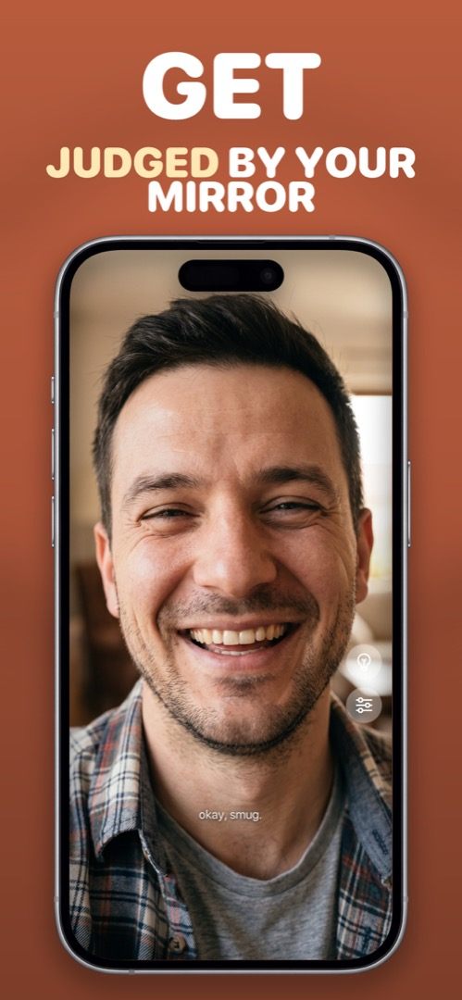

Does iPhone Have a Built-in Mirror App?
Short answer: no. iOS ships Camera, FaceTime and Magnifier, but there's no Mirror app anywhere in Settings or on the home screen. Here's what people usually try instead, why each one is a compromise, and what to install if you want the real thing.
What people try first
The Camera app (selfie mode)
The closest thing to a built-in mirror. It works for a glance, but it's designed to take photos, not to be looked into: the shutter is under your thumb, the view is busy with controls, brightness isn't maxed, and there's no way to light your face without actually taking a picture.
FaceTime's self-view
Start a call, and the little preview shows your face. It's tiny, it's mirrored inconsistently between preview and what others see, and you have to start a call to use it. Not a mirror.
Magnifier
Great for reading small print with the rear camera. It can be switched to the front camera, but it's tuned for text — heavy contrast filters, a detection overlay, no mirror-like behaviour.
"Screen Mirroring" in Control Center
This trips up a lot of searches. Screen Mirroring is AirPlay — it sends your iPhone's display to a TV or Mac. It has nothing to do with seeing your own face.
What a real mirror app does differently
A mirror app uses the same front camera, but makes it behave like glass: full-screen, always mirrored, brightness pinned to maximum, a ring light for dark rooms, zoom for details, and — importantly — no shutter and nothing recorded. That last point is why it's worth using a purpose-built app rather than the Camera: you're not creating a photo every time you check your hair.
How to do it in Mirrorly
That's exactly the gap Mirrorly fills. To use it as your iPhone's missing mirror:
- Install Mirrorly from the App Store. It asks for camera access only — no account, no photo library, no location.
- Open it and you're looking at a full-screen mirror, already at maximum brightness.
- Tap the light-bulb for the ring light, pinch or slide to zoom, tap the sliders icon for settings.
- Close the app when you're done. Nothing is saved, and the camera turns off.

Mirrorly is free to try on the App Store. A full-screen iPhone mirror with a ring light, zoom and maximum brightness. Three free checks, then a one-time unlock — no subscription, no photos saved, no account, no ads.